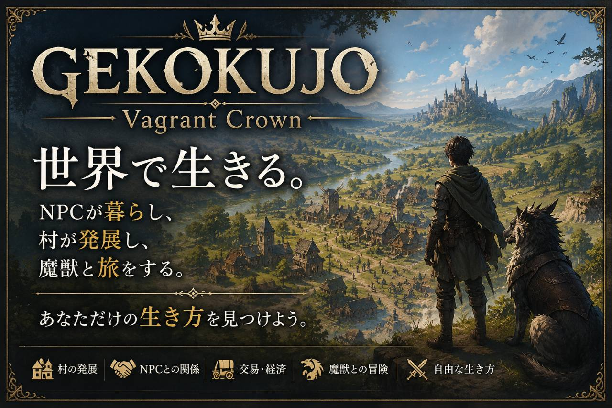
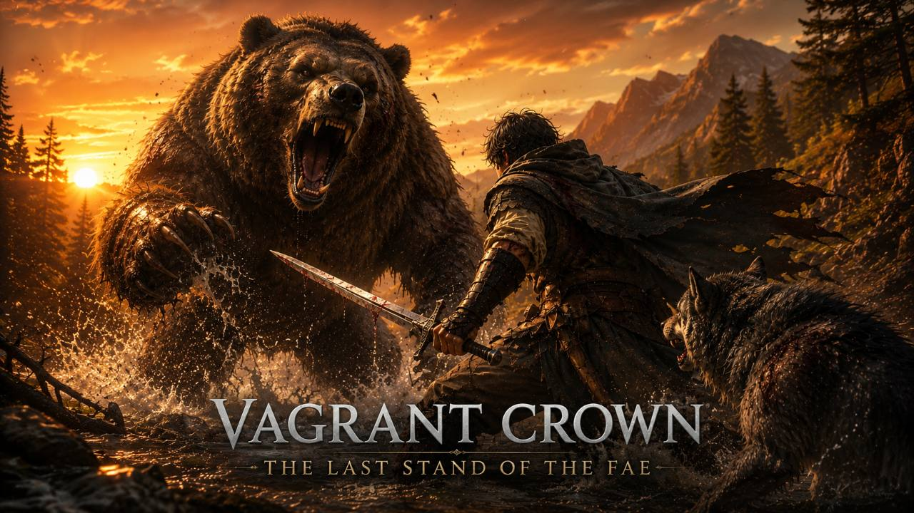
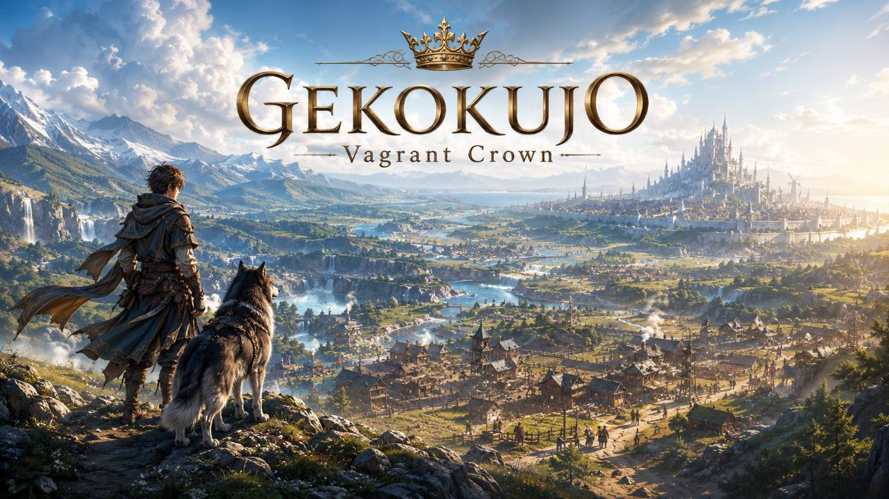
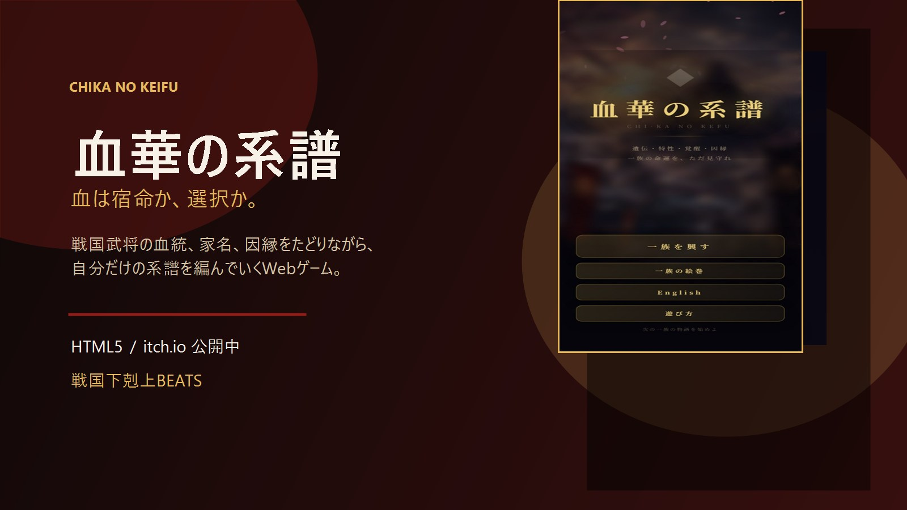

Living World
多くのRPGでは、村人はプレイヤーが話しかけるまで動きません。『GEKOKUJO: Vagrant Crown』では、行商人や旅人が目的地に向かって自律的に歩き、プレイヤーの目が届かない場所でも出来事が起き続けます。詳しい設計は開発記事「Living World RPGとは何か」で解説しています。
Shirokuro Games presents
狼の相棒と旅する、third-person party-based Living World RPG。NPCは日々を生き、あなたとの関係を記憶し、噂は世界を動かしていく。
A third-person party-based Living World RPG about traveling with Party Members and your Wolf Companion through an evolving world of NPCs, rumors, battles, and bonds.
What makes it different
Steamページの最新説明に合わせて、公式HPも「third-person party-based Living World RPG」として再整理しました。戦略マップ中心だった旧構成から、フィールドを直接歩き、狼や仲間と旅する体験へ軸足を移しています。
多くのRPGでは、村人はプレイヤーが話しかけるまで動きません。『GEKOKUJO: Vagrant Crown』では、行商人や旅人が目的地に向かって自律的に歩き、プレイヤーの目が届かない場所でも出来事が起き続けます。詳しい設計は開発記事「Living World RPGとは何か」で解説しています。
助けたか見過ごしたか、何度会ったか——NPCはプレイヤーとの関わりを記憶し、その記憶は関係として積み重なり、やがて噂として周囲に広がっていきます。仕組みの詳細は開発記事「NPCはなぜ覚えているのか」にまとめました。
狼の相棒はパーティ枠とは別に旅へ同行し、仲間NPCは世界に生きる人物のままパーティへ参加します。固定メンバーだけでなく、依頼やイベントに応じた一時同行者も含め、出会いと別れが旅を形づくります。
Latest Steam Devlog
2026-09-27 / Steam News
三人称フィールド向けの新戦闘システムに合わせ、ヒットフィードバック、接触連動VFX/SE、武器ごとのモーション差を改善しています。
Steamニュースハブへ2026-09-17 / Steam News
村の依頼を読み、受付で正式に受注し、フィールド旅へつなげる冒険者ギルド/クエストボードの流れを開発中です。
SteamニュースハブへScreenshots



Games
Shirokuro Gamesのゲーム作品です。『GEKOKUJO: Vagrant Crown』を旗艦タイトルとして、Steamウィッシュリスト受付中。その他のWebゲームはサブ作品として整理しています。
狼の相棒、パーティメンバー、一時同行者と旅するthird-person party-based Living World RPG。NPCは日々を生き、関係を記憶し、噂やイベントが世界を動かします。Steamでウィッシュリスト受付中です。
A third-person party-based Living World RPG about your Wolf Companion, Party Members, NPC memories, rumors, battles, and bonds.
作品ページを見る Steamで見る
本リリース済み戦国の家・血統・継承を軸にしたWebゲーム。評定、家臣、分岐、結末を通じて、血の継承と選択の重さを描きます。itch.ioで本リリース済みです。
A Sengoku bloodline strategy web game, officially released on itch.io.
作品詳細血脈・契り・継承を軸にしたWebゲーム。家を残す判断と、誰と結ぶかで未来が変わる物語型シミュレーションです。
A browser game about bloodlines, vows, and succession.
作品詳細「戦国下剋上BEATS」の楽曲と連動するリズムゲーム。武将の熱量を音楽とプレイ体験に変換する実験的Web作品で、現在は体験版を公開中です。
A rhythm game tied to the Sengoku Gekokujo BEATS music project. Demo available now.
作品詳細News
GEKOKUJOの開発進捗を中心に、スタジオの更新をまとめています。
2026-09-27 / Steam News
三人称フィールド向けの新戦闘システムに合わせ、ヒット時の手応え、接触連動VFX/SE、武器ごとの攻撃モーション差を調整しています。
Steamニュースを見る2026-09-17 / Steam News
村の依頼、受付、受注、フィールドへの目的地導線をつなぐギルド/クエストボードの流れを構築しています。
Steamニュースを見るStudio
Shirokuro Gamesは、本業を続けながら少人数で運営するインディースタジオです。運営者情報、制作・運営方針、お問い合わせ先、プライバシーポリシーを公開しています。